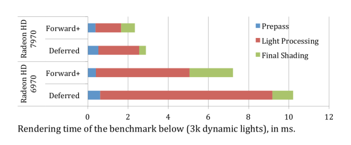

Tiled-based Deferred Shading
在进入正题之前，我们先回顾一下Intel在SIGGRAPH Courses 2010里提到的Tiled-based Deferred Shading。它的算法框架是：
- 生成G-Buffer，这一步和传统deferred shading一样。
- 把G-Buffer划分成许多16×16的tile，每个tile根据depth得到bounding box。
- 对于每个tile，把它的bounding box和light求交，得到对这个tile有贡献的light序列。
- 对于G-Buffer的每个pixel，用它所在tile的light序列累加计算shading。
- 在原先的deferred框架下，每个light需要画一个light volume，以决定它会影响到哪些pixel（也就是light culling）。而用tiled based的方法，只需要一个pass就可以对所有的光源进行求交。如果用了AMD在Mecha demo中用到的OIT方法，还可以做一个per-tile linked list，直接把light序列存在链表里。
Forward+ Rendering
有了Tiled-based Deferred Shading的基础，理解Forward+就变得简单多了。Forward+ Shading和Tiled-based Deferred Shading的关系就好比原先的Forward Shading和Deferred Shading，所以我们可以照猫画虎一次：
- Z-prepass，很多forward shading都会用这个作为优化，而在forward+中，这个变成了必然步骤。
- 把Z-Buffer划分成许多16×16的tile，每个tile根据depth得到bounding box。
- 对于每个tile，把它的bounding box和light求交，得到对这个tile有贡献的light序列。
- 对于每个物体，在PS中用该pixel所在tile的light序列累加计算shading。
从这里可以看出，前两步与Tiled-based deferred shading大同小异，但只需要Z-Buffer，而不需要很消耗带宽的G-Buffer（G-Buffer最小也要32bit color + 32bit depth）。第三步是完全一样的。第四步由于用了forward，可以有forward的各种好处：
- 支持复杂材质
- 支持硬件AA（虽然我一直认为硬件AA多算了很多东西，是一种巨大的浪费）
- 带宽利用率高
- 支持透明物体
- 由于light已经在步骤3中cache了，所以也可以不像传统的forward那样，把材质和光源搅在一起。加上shader中动态分支的能力，不难实现类似deferred那样的巨量光源支持。由于带宽省了很多，Forward+的速度能比Deferred快。在原paper里的性能比较足以说明这个问题。

注意事项
- 透明物体的渲染。第一步生成Z-prepass的时候，可以采用双Z-Buffer的办法，一个放不透明物体的Z，另一个放透明物体的Z。在第二步计算tile bounding box的时候，不管透不透明都放在一起计算一个总的bounding box。后面步骤不变，就能原生支持透明物体。
- 由于有了Z-Buffer，其他原先对Deferred有利的效果，比如GI、SSR，都可以直接应用。SSAO、SSVO之类的方法，如果需要考虑pixel normal，就需要适当的修改才能应用上。